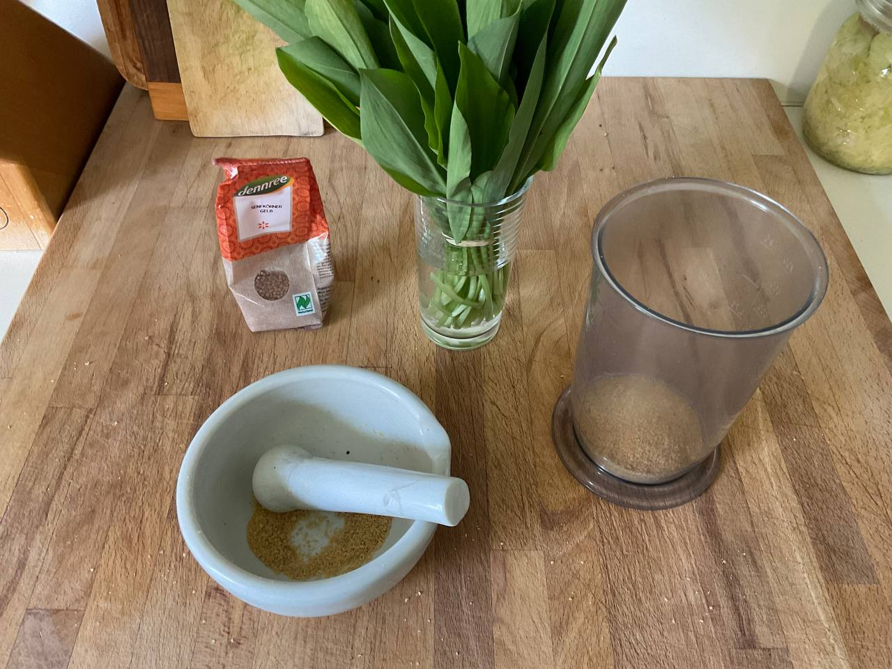
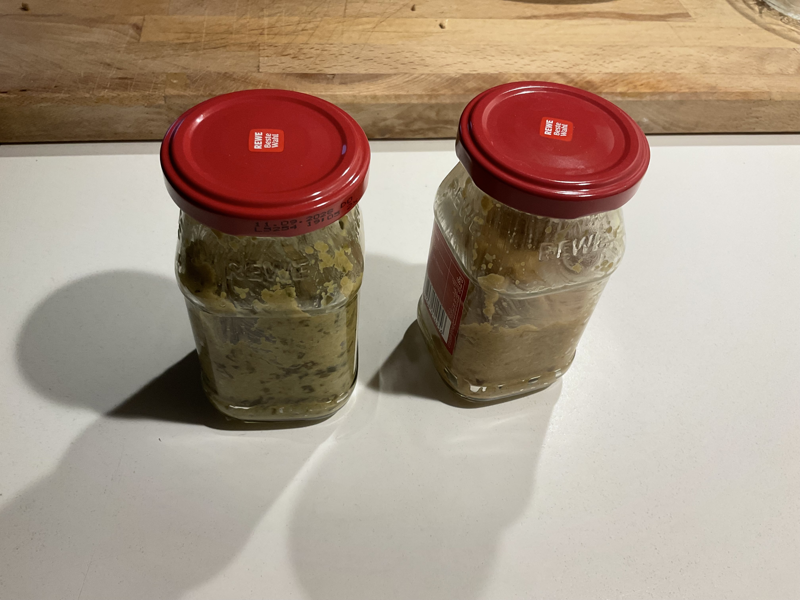

Zutaten:
200 g gelbe Senfkörner oder 200 g gelbes Senfmehl 300 ml trockener Weißwein oder Wasser 100 ml weißer Essig 2 EL Honig 2 EL Meersalz 2 EL Olivenöl
Zubereitung:
Senfkörner in einem Mörser oder einer Mühle mahlen. Andere alle Zutaten mischen und einen Tag mit einem Küchentuch abgedeckt stehen lassen. In saubere Gläser abfüllen.


Dieses Grundrezept kann durch Zugabe von Gewürzen wie Knoblauch, Zwiebeln etc. erweitert wrden. Besonders Bärlauch schmeckt hier toll.